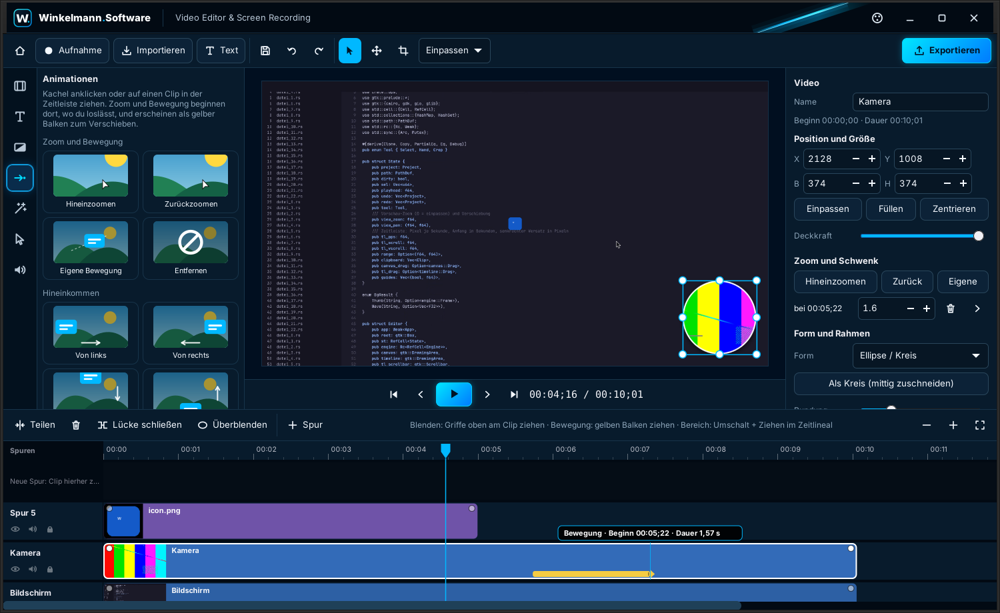
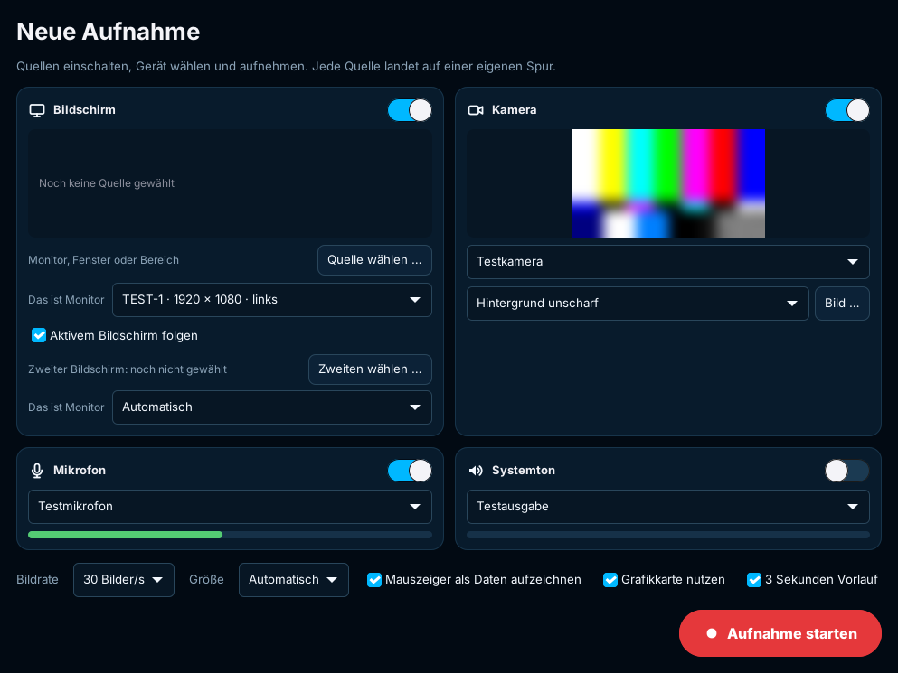
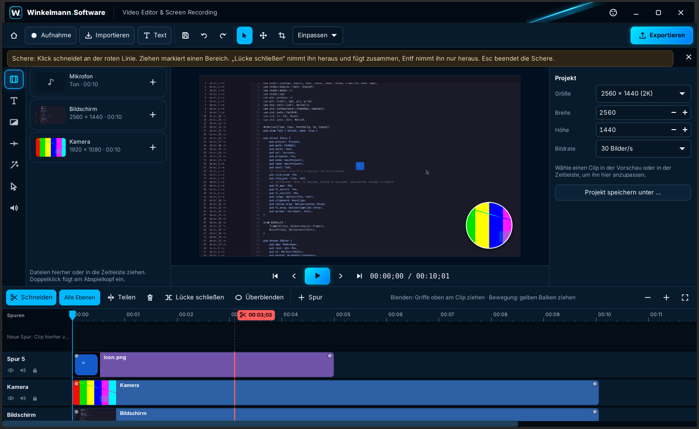
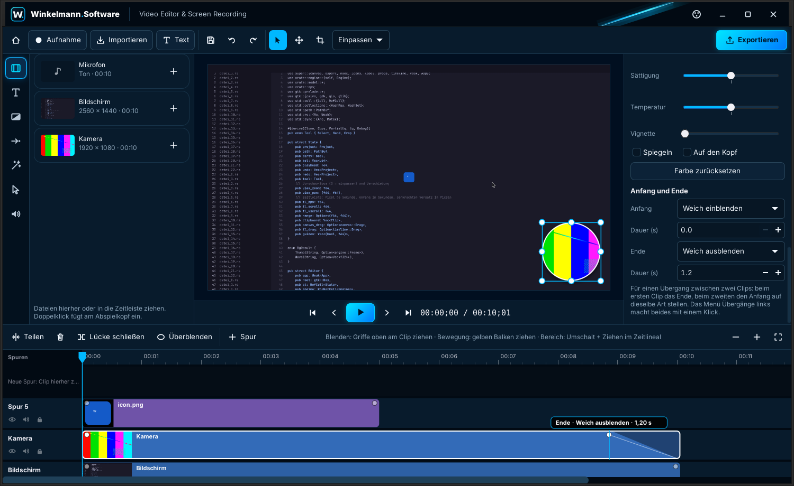
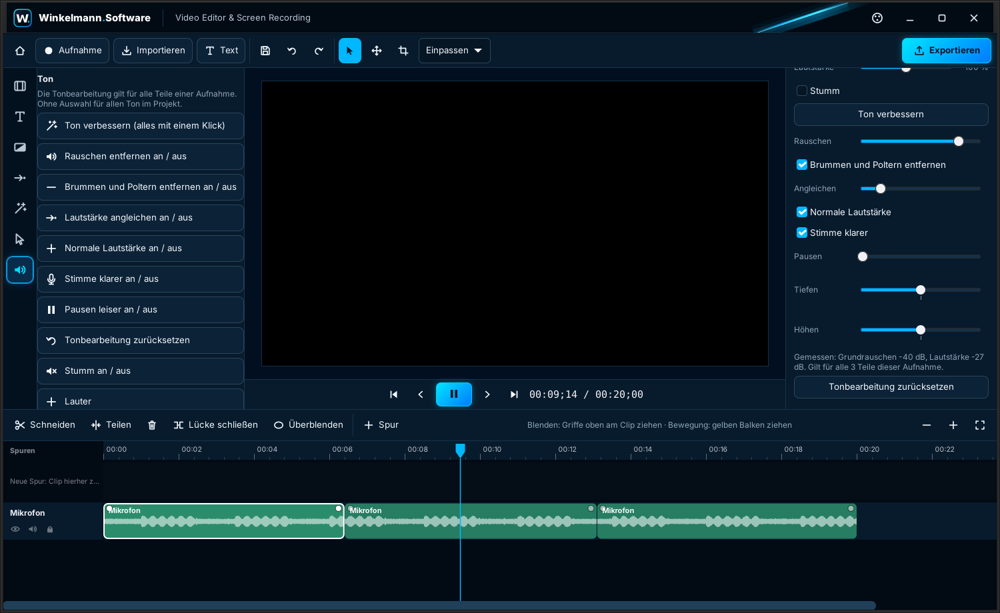
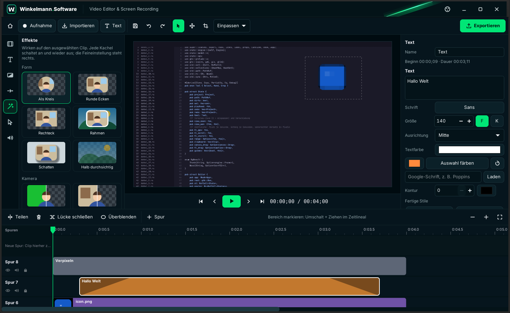
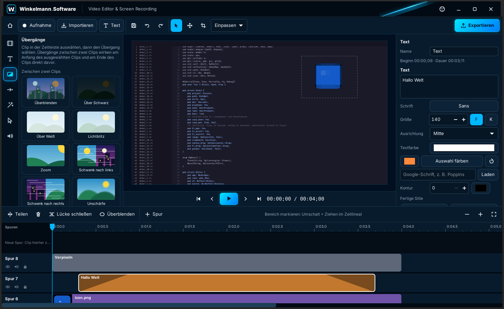

Bildschirm aufnehmen,
schneiden und fertig.
WS.Video nimmt Bildschirm, Kamera, Mikrofon und Systemton getrennt auf und bringt alles direkt in einen Videoeditor: mit Schnitt, Übergängen, Zoom auf den Mauszeiger, Klick-Effekten, Tonverbesserung per Klick und Export in Full HD oder 4K.
Aktuelle Version 0.9.0 · AppImage für Ubuntu, Linux Mint, Debian, Fedora, Rocky Linux und Arch · Rust, GTK 4 und GStreamer

Was WS.Video kann
Alles, was du für Anleitungen, Tutorials und Präsentationsvideos brauchst, in einem Programm. Ohne Abo, ohne Wasserzeichen.
Aufnahme mit vier Quellen
Bildschirm, Webcam, Mikrofon und Systemton, jede Quelle auf ihrer eigenen Spur. Pause, Neustart und Stopp über eine kleine Steuerleiste oder per Tastenkürzel von überall.
Aktivem Bildschirm folgen
Bei mehreren Monitoren zeigt das Video immer den, auf dem gerade dein Mauszeiger ist. Am Ende liegt eine einzige Bildschirmspur im Projekt.
Schneiden wie gewohnt
Mehrspurige Zeitleiste, Schere für alle oder eine Ebene, Lücken schließen, Bereiche markieren, Bild und Ton verknüpfen oder trennen.
Mauszeiger-Effekte
Die Mausposition wird mit aufgezeichnet: Zeiger vergrößern, glätten, hervorheben, Klick-Ringe zeigen und mit einem Klick auf den Zeiger hineinzoomen.
Übergänge und Animationen
Überblenden, Lichtblitz, Zoom, Schwenk, Unschärfe, Glitch. Hineingleiten, Aufspringen, Zoom und Schwenk mit eigenen Bewegungspfaden.
Kamera, Text und Anmerkungen
Kamera als Kreis oder Rechteck mit Rahmen und Schatten, Greenscreen mit Pipette, Text, Pfeile, Formen, Weichzeichner und Verpixeln.
Ton verbessern mit einem Klick
WS.Video misst das Rauschen in den Sprechpausen und rechnet es heraus. Dazu Brummen entfernen, Lautstärke angleichen und Stimme klarer machen.
Export bis 4K
MP4 oder MKV in HD, Full HD, 2K oder 4K mit H.264, HEVC oder AV1. Kodiert auf der Grafikkarte (VA-API, NVENC) und fällt bei Bedarf auf die CPU zurück.
Eigene Designs
Grün und Electric Blue sind dabei. Eigene Farben legst du als kleine JSON-Datei an, sie erscheinen sofort in der Auswahl.
So sieht es aus
Bilder aus der aktuellen Version. Zum Vergrößern anklicken.






Installieren
Ausführliche Installationsanleitung für jedes System →
Eine einzelne Datei, nichts zu installieren. Läuft auf Ubuntu ab 24.04, Linux Mint 22, Debian 13, Fedora ab 43, Rocky Linux 10 und Arch.
AppImage herunterladen und starten
Lade WS.Video-0.9.0-x86_64.AppImage von der Release-Seite, mach die Datei ausführbar (Rechtsklick, Eigenschaften, „Als Programm ausführen“) und starte sie per Doppelklick. Im Terminal:
chmod +x ~/Downloads/WS.Video-0.9.0-x86_64.AppImage
~/Downloads/WS.Video-0.9.0-x86_64.AppImageBeim ersten Start bietet WS.Video an, sich ins Startmenü einzutragen. Startet die Datei nicht, fehlt meist FUSE: dann mit --appimage-extract-and-run starten.
Oder unter Arch und Omarchy klassisch installieren
tar xzf ws-video-0.9.0.tar.gz
cd ws-video-0.9.0
./install.shDas Skript installiert fehlende Pakete mit pacman und legt das Programm nach ~/.local/bin/ws-video.
Mausklicks freigeben (empfohlen)
sudo usermod -aG input $USERDanach neu anmelden. Nötig für die Klick-Ringe unter Hyprland; die Mausposition wird unter Hyprland auch ohne diesen Schritt aufgezeichnet.
Tastenkürzel einrichten
ws-video --kuerzel-einrichtenTrägt zwei freie Tasten in deine Hyprland-Einstellungen ein, normalerweise SUPER + ALT + R (Aufnahme starten und beenden) und SUPER + ALT + P (Pause).
Was auf welchem System geht
| System | Schnitt, Effekte, Ton, Export | Aufnahme | Mauszeiger-Effekte |
|---|---|---|---|
| Arch mit Hyprland (Omarchy) | ja | ja | ja |
| Ubuntu, Debian, Fedora, Rocky 10 (GNOME, KDE mit Wayland) | ja | ja, Zeiger fest im Bild | in Arbeit |
| Linux Mint (Cinnamon, X11) | ja | in Arbeit | in Arbeit |
Wenn etwas nicht geht
Ein Befehl sammelt alles, was für die Fehlersuche nötig ist.
ws-video --fehlerberichtDie Datei ~/Downloads/ws-video-fehlerbericht.txt enthält die Version, Angaben zu System und Hardware und die Programmprotokolle. Benutzer- und Rechnername werden ersetzt, verschickt wird nichts automatisch. Hänge sie an ein Issue auf GitHub an.
| Was | Wo |
|---|---|
| Aufnahmen und Projekte | ~/Videos/WS.Video/, je Projekt ein Ordner |
| Einstellungen und Designs | ~/.config/ws-video/ |
| Fehlerprotokoll | ~/.local/state/ws-video/ |
| Zwischenspeicher | ~/.cache/ws-video/ (darf gelöscht werden) |
Offen und kostenlos
WS.Video ist freie Software unter der GNU General Public License Version 3. Der vollständige Quelltext liegt auf GitHub, du darfst ihn nutzen, verändern und weitergeben. Name und Logo sind davon ausgenommen. Das Programm soll den Umstieg auf Linux leichter machen, gerade für alle, die Anleitungen und Schulungsvideos erstellen.
Du brauchst Hilfe bei Einrichtung, Schulung oder Anpassung für dein Unternehmen? Winkelmann.Software bietet dazu Service an.